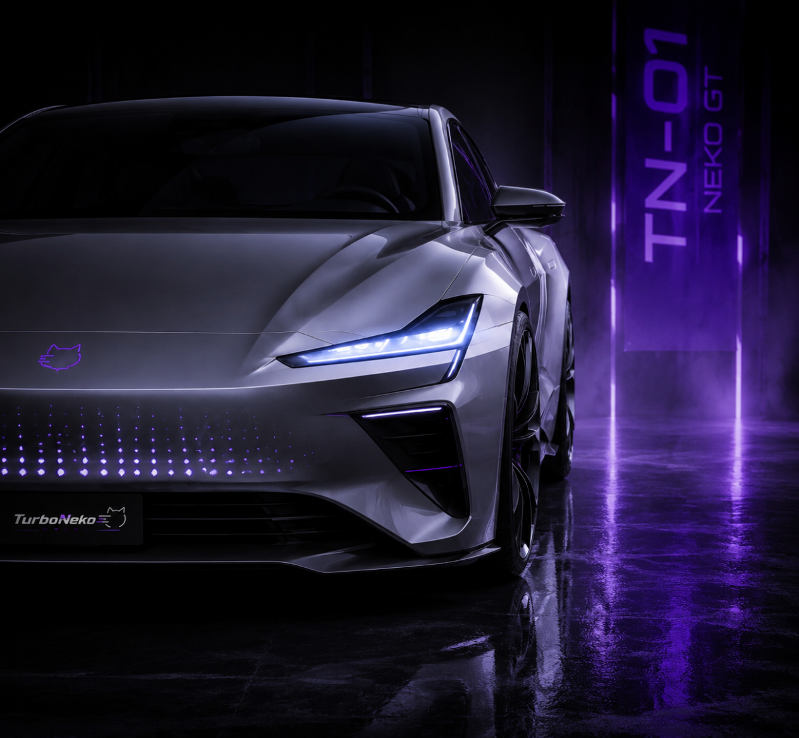

Grand Tourer of Elegance
优雅地超越一切。
设计理念
它不追求极致速度的张扬，而是致力于在高速驰骋中展现从容气度。 速度静谧无声，却从不含糊迟疑。NEKO GT 代表的是——
优雅地超越一切。
技术规格
核心特色
流线型车身轮廓，风阻系数低至 0.21Cd，优雅与效能兼得。
前后双电机独立控制，精准分配扭矩，弯道中亦从容不迫。
自适应空气悬挂，在运动性与长途舒适性之间无缝切换。
锐利猫眼式 LED 大灯，配合点阵式 NEKO BREATH 欢迎灯效。
设计语言
NEKO GT 的设计拒绝浮夸。每一根线条都在诉说速度，却不以喧嚣示人。
参考了奥迪的优雅、BMW 的动态、奔驰的舒适——三位一体，造就了这台电动 GT 的独特气质。
车身采用银色主调，配合 NEKO 标志性的紫色光效氛围，
在低调中蕴含锋芒。猫爪式锻造轮毂（NEKO CLAW）既是品牌标识，也是轻量化工程的艺术品。